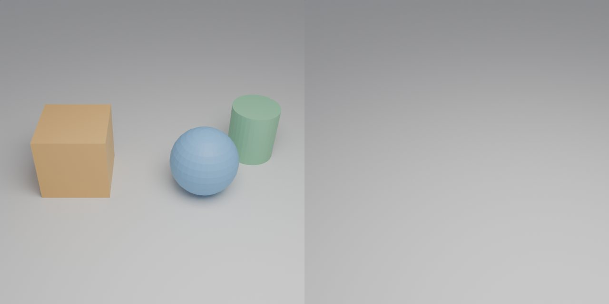

Bonus lesson
Collections
As a scene grows, it gets hard to find things. Collections let you group objects, like folders for your scene. The Blender manual says they only organize the scene logically and do not create any parent and child relationship between objects.
1. Make a collection
Select one or more objects in Object Mode and press M (Move to Collection). The pop-up lets you pick an existing collection or make a new one. The same tools are in Object > Collection. Two others from the manual:
Shift + M is Link to Collection. It adds the objects to a collection but keeps them in their current one, so an object can be in several collections. Ctrl + G is Create New Collection.
2. Name and nest
You can give collections names and place collections inside other collections, like folders and subfolders. The manual's example is a house collection that holds a bedroom collection, which holds a furniture collection. To rename a collection, click in its name field in the Object tab Collections panel, as the manual describes.
3. Control what renders
Open the Collection tab in the Properties editor. Under Visibility, Selectable controls whether you can select the objects in the 3D Viewport, and Show In Renders controls whether the collection appears in renders. The View Layer section has Include: unchecked, the contents are hidden in the viewport, the render and the Outliner.

When to use it
Put the mug, the light and the camera in separate collections for the mug project. Then you can switch a group off without deleting anything. Read the manual page on Collections and the introduction.
Exercise
Add a cube, a sphere and a plane. Move the cube and sphere into a new collection called Props with M. Render with F12, then switch off Show In Renders for Props and render again. Compare the two images.